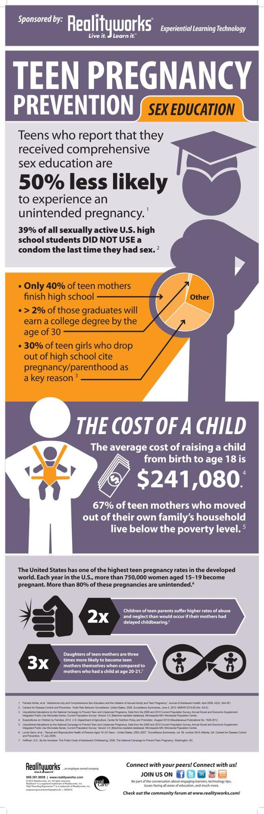

Summary: Due to a long history filled with systematic injustices to populations of color, especially those of lower socioeconomic status, communities in Barrio Logan are faced with more barriers to adequate access to healthcare education and family planning services. This is a major catalyst for vast disparities in health outcomes and access within these communities, especially among young womxn of color. Being able to guide, teach, and empower youths in these communities to learn more about their health, the resources available them such as clinics, mentor programs, and Expectant Teen Classroom programs is a vital way to increase reproductive health awareness and accessibility within their community and help foster a healthier future for Latinx youth in Barrio Logan.
Seated on a concrete table painted green, white, and red in the heart of Chicano Park, I noticed a young woman about my age, listening to music with earbuds in and reading a book entitled “Code of the Warrior”. As I began to walk closer towards her, she lifted her eyes from the book, looked at me, and smiled. I smiled back as I approached her and we began to speak about her experience living in Barrio Logan as a woman of color, her perspective on her own access to women’s reproductive health care, and her goals and aspirations for her life.

Jennifer on the day I met her
Jennifer is a first generation Chicana who’s experienced a lack of accessibility to women’s health oriented education throughout her experience in the San Diego Unified School District. During elementary school, Jennifer and her classmates were all relocated to a different elementary school called Golden Hill.
JV: “I went to Einstein, but back then it was Brooklyn. They took our school from us so then we had to make another school for us. They turned it into Einstein for them.”
KP: “What do you mean by ‘They turned it into Einstein for them’?”
JV: “They took it. I don’t know what happened. We got kicked out and that school turned into some other school. Most of the people I was with [in school], we didn’t stay to go to Einstein. It was mostly ‘whites’ that went there and some Mexicans. Yeah, we decided to stick together and go to the same school, which was Golden Hill.”
Originally a K-5 school, Jennifer’s class at Golden Hill was the first class to be extended into sixth grade, into seventh grade, and was the first class to culminate the eighth grade. After middle school, Jennifer went to San Diego High School where she graduated a semester early, despite always feeling as though she was never academically challenged enough.
JV: “I wanted to get out. What had happened was, I was good with my grades, so they didn’t want me to leave. I wanted to start fresh at another school. Actually, I wanted to go to La Jolla I don’t know why. I was like, maybe they have better opportunities, you know? Like their education would be better, challenge me. Because I felt I wasn’t being challenged that much.”
But Jennifer didn’t have the resources she needed, like the financial resources to fund her transportation from Barrio Logan to La Jolla, or mentors and motivators to support her transition between high schools and really challenge her to succeed in higher education. As a woman of color, living in Barrio Logan with her mother and sister, she claims people always looked at her differently. When asked about her experience, she stated, “You get judged a lot. I’m different, so sometimes I’ll have more eyes on me. I don’t know if that’s because I’m Mexican. But you know, you go to a store, and they’re really keeping an eye on you, seeing if you’re going to steal something.” It is these types of demoralizing and disheartening experiences that really shape how a young woman perceives her worth in our society. Bright young women like Jennifer should feel empowered within their community as a direct result of having various important health and educational resources readily available for them to attain in order to encourage positive and healthy lifestyles.
Local youth discuss the serious lack of accessible health clinics and hospitals in Barrio Logan
Aside from the minimal health care services and health care education she feels like she had received in public school, Jennifer recalls an exceptionally pleasant experience with the Logan Heights Family Health Center, a local health clinic specializing in various health care services such as women’s services, prenatal services, mental health services, and even STD screening and treatment, among others. The Logan Heights Family Health Center takes special pride in the fact that it never turns its patients away and holds “a special commitment to the uninsured, low-income and medically underserved.” (fhcsd.org) Having an amicable healthcare resource such as this one in Barrio Logan offers families a greater sense of security and control over their health and well-being, and made Jennifer feel like she was genuinely cared for in her community.
One of Jennifer’s San Diego High School classmates, who was an expectant mother during the beginning of her senior year, was given the opportunity to enter into an “Expectant Teen Classroom” program at a different high school nearby called Garfield High School. In this program, high school teens who are pregnant or have babies or toddlers are given opportunities to complete their high school degree with special schedules designed to ensure that these young men and women keep moving forward with their education and attain a high school diploma while raising their babies. Students enrolled in this program are also given the opportunity to develop their parenting skills by taking specific classes tailored to help expectant teens and teens with children to learn the do’s and don’ts of effective parenting. This program aims to provide support services, resources to plan for the teens’ future, and care and early education for their infants and toddlers. The Expectant Teen Classroom is a remarkable resource for expectant teens, but, unfortunately, there are only two high schools in the San Diego Unified School District that offer this program. This program is offered at Garfield High School and Twain High School, seven minutes and fifteen minutes away from Barrio Logan, respectively. While this resource is readily accessible to expectant high school students residing in or near Barrio Logan, efforts should be made to expand this program to other cities in San Diego County in order to fully serve the expectant youth population in San Diego and allow for these young women and men to complete their high school education while also successfully raising their children to be happy and healthy.

ETC Program Teacher with two Toddlers of the ETC High School Students
While the Expectant Teen Classroom program is an incredibly beneficial asset to the San Diego Unified School District, how much effort is really being invested in preventative measures when it comes to teen pregnancy and reproductive/general health education in Barrio Logan? Are there programs implemented in the school curriculum towards teaching students about their reproductive health and well-being in advance in order to better prepare students to make the very best choices in regards to their health? According to the San Diego Unified School District, SDUSD public school students are supplied with a sexual health education in sixth grade, eighth grade, and again in high school. However, when I asked Jennifer about her own personal experience with preventative reproductive/general health education, she recalled learning about her reproductive health only once during early middle school. Health care education throughout her public school experience had always been very generic and aimed at a whole group of students, instead of focusing on the students at the individual level in a more personal and attentive way.
Teen Pregnancy Infographic- Positive Impact of Reproductive Education and Accessibility to Programs like ETC
There needs to be an effort to raise awareness, increase educational opportunities concerning reproductive health and have these opportunities be readily available for students in Barrio Logan in order for them to be able to make proper decisions about their own bodies. Various non-profit and “after-school” type programs such as the San Diego BRIGHT Families Mentor Project and Fatherhood is Forever Group Mentoring Project exist in order to supply these students with what they may be missing in a regular public school education, such as mentorship, motivation, and personalized guidance on health-related issues.
Community members in Barrio Logan consist of undocumented, immigrant, or first-generation women of color, all experiencing life from very different perspectives as a direct result of racial, social, linguistic and financial barriers. No woman’s story is exactly like the others’. One thing definitely rings true in many of these women’s’ experiences, and that is the purposeful erasure and invisibility of their voices and the real impact this erasure had and still has on creating the health disparities that exist within our country at this very moment. If you’d like to hear Jennifer’s voice shine through all the barriers she’s faced in her life, please read her extraordinary written piece below.